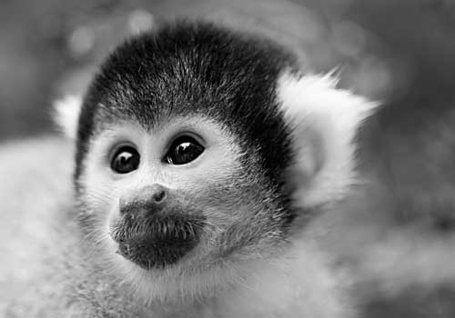

Baker
First Lady of Space
Before humans were launched into space, many animals were propelled heavenwards to pave the way for mankind's pioneering endeavors.
These original pioneers, including numerous monkeys, served their nations in order to investigate the biological effects of space travel.
Perhaps the most famous animal astronaut is Laika, the Soviet space dog who made her historic flight on November 3, 1957.
The United States preferred to use monkeys for its missions and launched numerous monkey flights primarily
between 1948 and 1961 paving the way for manned missions.
Thirty-two monkeys flew in the space program; each had only one mission.
Numerous back-up monkeys also went through the programs but never flew. Monkeys from several species were used, including rhesus monkeys, cynomolgus monkeys, and squirrel monkeys, as well as pig-tailed macaques.
Miss Baker's Historic Flight
Miss Baker and fellow female pioneer Able's historic flight on May 28, 1959 proved a turning point in the US space era.
The first beings ever to be recovered alive from a flight into outer space, their journey paved the way for putting the first man into orbit around the earth.

Caption: Miss Baker, the original space pioneer, contemplates her first flight heavenward.
Miss Baker's journey lasted 15 minutes and reached speeds of up to 10,000 MPH. Baker and Able were weightless for nine minutes. A NASA spokesperson stated that the monkeys were in "perfect condition" on their return to earth. Indeed Miss Baker went on to live a long and fruitful life, living until 1984.
Miss Baker and Able's journey gripped the world's imagination. Appearing on the June 15, 1959 cover of Life magazine the pair joined a growing list of women celebrities to grace the magazine's cover in 1959, a list which included Marilyn Monroe, Zsa Zsa Gabor and Jackie Kennedy.
The Mission
Miss Baker's flight aboard a Jupiter AM-18 IRBM (Intermediate Range Ballistic Missile) was another milestone in the history of space flight, proving that life could be sustained in space. During the period of weightlessness along the flight's trajectory arc, the physiological responses of Baker approached normal. According to telemetry data, Baker even appeared to doze or become drowsy. Upon reentry, however, the responses of both monkeys rose again, with the animals nearing a settled physiological state at landing.
The Jupiter missile was originally developed by the US Army as a long-range successor to its PGM-11 Redstone missile, but was eventually taken over and deployed by the USAF for political reasons. It was also the only one of the United States' early strategic ballistic missiles with some mobility.
The US Space Program
President Eisenhower formed the National Aeronautics and Space Administration (NASA) in 1958 with it's mission to encourage peaceful applications in space science. The agency became operational on October 1, 1958.
In the beginning, NASA’s missions focused on the space race with the Soviet Union. Following Soviet cosmonaut Yuri Gagarin becoming the first man to orbit the Earth in 1961 President Kennedy understood the need for America to surpass the Soviet Union in the space race. He secured additional funding and resources from congress which allowed John Glenn Jr. to become the first American to orbit Earth.
Space exploration continued throughout the 1960s. Project Gemini and The Apollo Program were the next projects carried out by NASA. On July 20, 1969, the Apollo 11 astronauts Neil Armstrong, Michael Collins, and Edwin "Buzz" Aldrin Jr. realized President Kennedy's dream of landing a man on the moon.
Currently, NASA is supporting the International Space Station and is conducting in-depth surveys and scientific research throughout the solar system.
Life in Retirement
Miss Baker married her long-time partner and fellow monkey 'Big George' in 1962 at the Naval Aerospace Medical Center in Pensacola, Florida where she lived.
In 1971, Miss Baker was moved to the U.S. Space & Rocket Center. Whilst there she received around 100 letters a day from schoolchildren and regularly entertained visitors to the museum.
Miss Bakers husband Big George passed away on January 8, 1979. Not one to wait around for long, it was only three months until she 'married' again, this time to Norman, from the Yerkes National Primate Research Center. However, it seems Miss Baker wasn't entirely comfortable with the event after refusing to wear her white wedding train, tearing it off after a few seconds.
"Baker delights visitors every day with her energy and antics with her husband Norman."
Ed Buckbee, Center Director, U.S. Space & Rocket Center, 1982
Norman and Miss Baker celebrated her birthday on the anniversary of her flight each year. To celebrate the 25th anniversary of her flight, Miss Baker was treated to a rubber duck and, her favorite, strawberry gelatin with bananas, along with well-wishes from thousands of people.
Miss Baker died aged 27, of kidney failure at a clinic at Auburn University after becoming the oldest living squirrel monkey on record. She is buried on the grounds at the U.S. Space & Rocket Center and to this day her grave regularly has one or more bananas on top.
------------
Content (c) The Web Evolved.
The Space Pioneers example text, designed to accompany Beginning HTML5 and CSS3: The Web Evolved (http://thewebevolved.com/), published by Apress. Text: The Web Evolved.
HTML + CSS released under a Creative Commons Attribution 3.0 license.